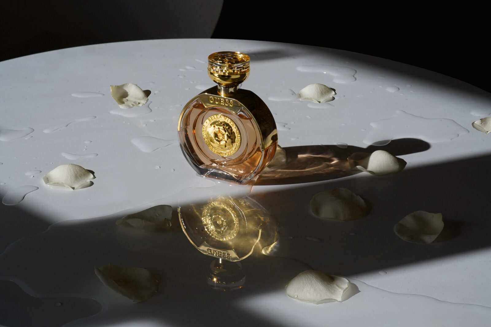
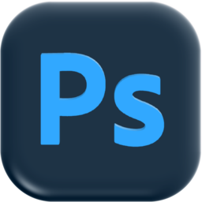
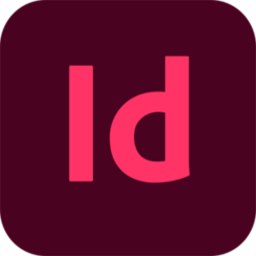
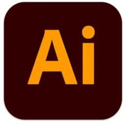
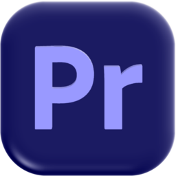
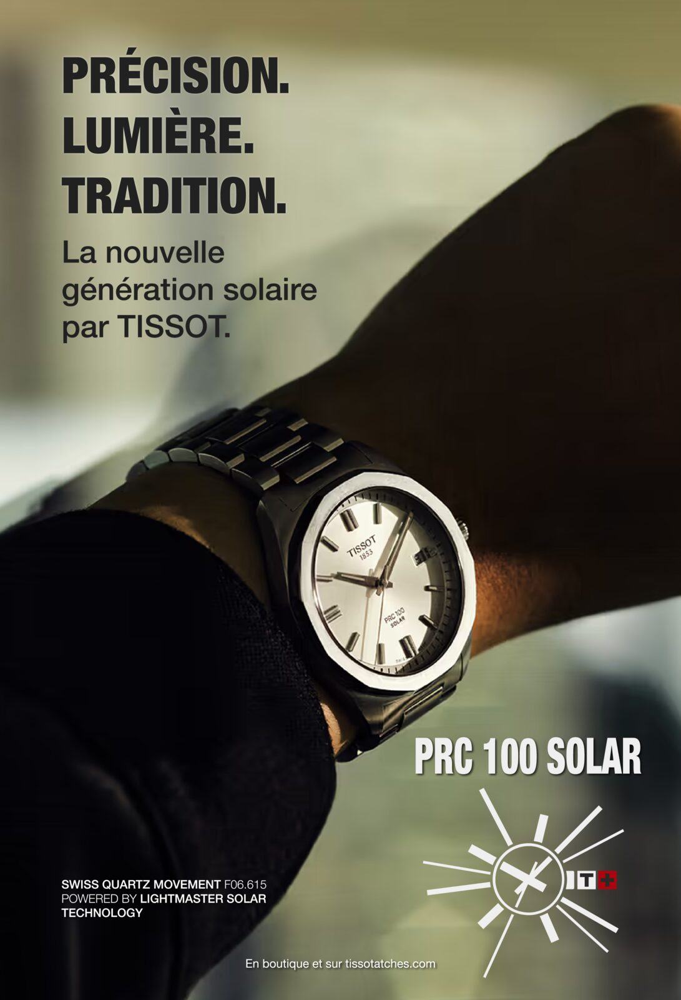
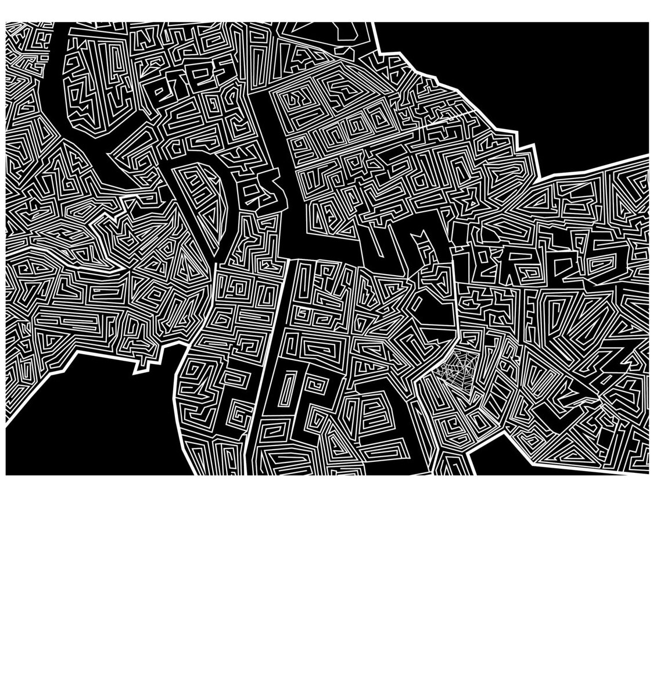
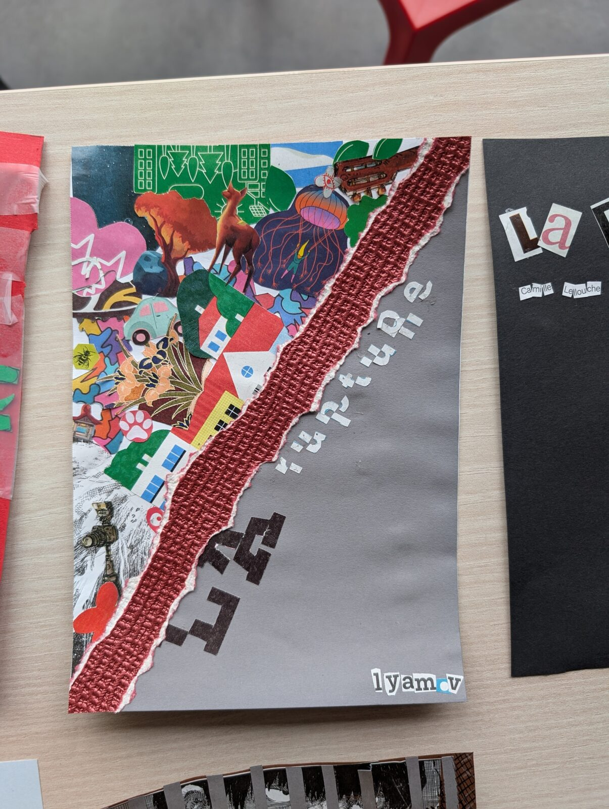
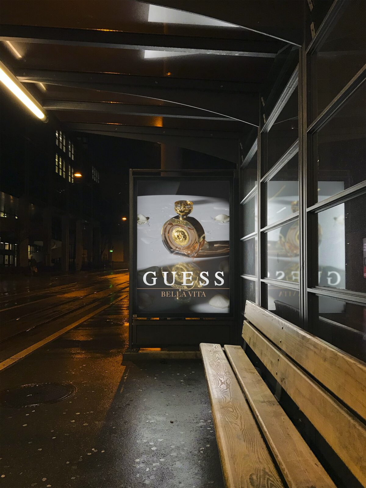
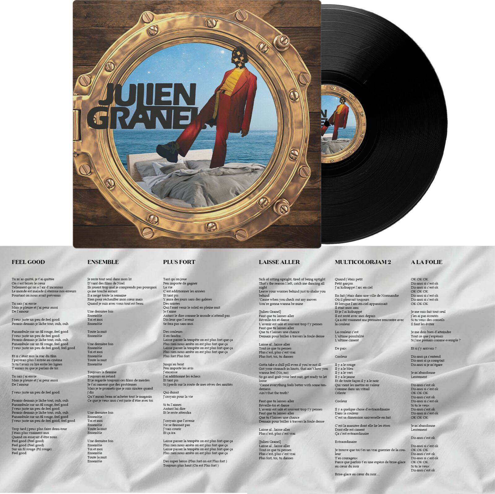

Création et design digital
Cette section présente mes projets réalisés au cours de mes trois années de Bachelor. Il y en a peu, car beaucoup ne reflètent pas mon univers ni ce que j’aime réellement créer. J’ai donc choisi de ne garder que ceux qui correspondent à mon style et à mes inspirations.

Logiciels utilisés




Branding et typographie
Pour ce projet, j’ai développé l’ensemble du concept : histoire, identité visuelle, logo et éléments essentiels pour la mise en place du produit.
La fiole Somnum Laboris illustre l’idée d’une potion permettant, au Moyen Âge, de travailler en dormant afin d’accomplir toutes les tâches quotidiennes.
Une maquette physique de la fiole a également été réalisée (voir vidéo à droite).

Stratégie de com 360°
Pour ce projet, il s’agissait de réaliser une affiche de présentation de la montre PRC 100 Solar de TISSOT. J’ai choisi de mettre en avant le détail solaire, soulignant que la montre fonctionne grâce à l’énergie solaire.
Motion
Pour ce projet, j’ai combiné l’animation avec deux de mes photographies, en ajoutant des éléments illustratifs sur un fond réaliste afin de créer une sensation de mouvement et de transition entre les décors.

Conception éditorial print
Pour ce projet, j’ai créé une affiche pour la Fête des Lumières 2023, en mettant en avant les éléments principaux de l’événement. L’affiche représente la carte de la ville de Lyon, intégrant des labyrinthes inspirés de l’univers d’Alice au pays des merveilles.
Expérimentation graphique
Pour ce projet, il s’agissait de choisir un concept parmi une liste (ici « La rupture ») et de créer une page de couverture pour un futur livre à partir de papiers récupérés par toute la classe. Mon travail montre des éléments fragmentés et dispersés vers un espace vide, pour symboliser la sensation de perte liée à une rupture.


Photographie
Pour ce projet, nous devions créer une campagne publicitaire complète pour un parfum de notre choix. Nous avons choisi Bella Vita de GUESS, et je me suis chargée de la photographie et de la retouche des images.
Suite Adobe
Pour ce projet, nous devions revisiter le vinyle d’un artiste de notre choix. J’ai travaillé sur celui de Julien Granel, en créant le visuel du vinyle avec une photo de l’artiste, du montage photo et un élément graphique, ainsi que la liste des chansons sur un fond d’image. Le thème choisi était le surréalisme, et j’ai utilisé Photoshop, InDesign et Illustrator pour réaliser le projet.

-
Pourquoi ces projets ?
J’ai choisi d’inclure ces projets dans mon portfolio car ce sont ceux qui m’ont le plus marquée, qui me représentent le mieux et sur lesquels je me suis le plus amusée à travailler.
-
Ce qu’ils m’ont apportés
Ils m’ont permis d’explorer différents domaines, du design graphique à la photographie, en passant par la mise en scène et le montage, et de développer mon sens de la composition, ma créativité et ma capacité à mener un projet de A à Z.